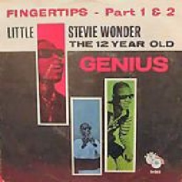
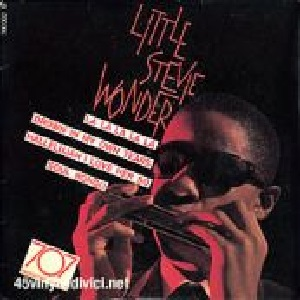

The 12 Year Old Genius Live was his third album and first live, recorded when he was only 12 years old, becoming the first artist to put the single and album simultaneously at number one on the charts of sale. Sales, aided by the live
version of "Fingertips," got more than one million units.
In "Fingertips Pt. 2", the voice of Little Stevie and his harmonica, were accompanied by a group of musicians from the
Motown in which was included the battery of Marvin Gaye. You can see a little person, that despite the visual
impediment, has rhythm and music in the body.
 